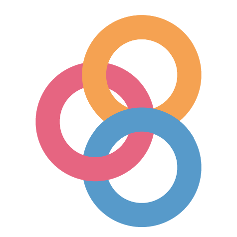

Weekly Course Content
As detailed on the schedule page, the course will be broken up into 14 weeks of content, and each week will have two lectures (cleverly labeled “A” and “B”) that cover that week’s unique topic. Each week will have a recommended set of readings that will help reinforce the content. As we progress through the semester, you will be able to access the weekly content on the sidebar of this page. For each week, you’ll find information about readings and topics, as well as links to the lecture slides.
Lecture slides
The lecture slides are Jupyter notebook files, a mix of executable Python cells, text, and images. Students have a few different options to access the slide materials:
- The Jupyter notebook files for each week are stored in a repository that is available on the course’s GitHub homepage. On the content page for each week, you will see a link to this repository. Once you navigate to the repository on GitHub, you can download the contents of the repository to your computer and work locally with the notebook files by launching JupyterLab on your laptop. To download the repository contents, look for the green “Code” button and select “Download ZIP”:
You can also open the lecture slides in an interactive, executable environment using the free Binder service. This service is hosted in the cloud, meaning that the code is not being executed locally on your laptop but instead on Binder’s servers. This can be very convenient, since it doesn’t require you to have the files downloaded to your laptop or your Python environment to be set up yet. On the content page for each week, look for the Binder logo  for links to launch the lectures on Binder.
On the content page for each week, there are also links to HTML versions of the lecture slides. Look for the icon for this version of the slides. Since they are displayed in the browser, they are NOT executable and cannot be changed. This version of the slides is a useful reference tool to look up how we did something in class. During class periods, we recommend that you use options #1 or #2 to view the slides, so that you can follow along and execute slides and participate in any in-class exercises or labs.